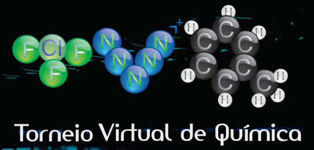

TVQ: Por que participar da melhor olimpíada de Química do Brasil
Posted in Experiências olímpicas on fevereiro 19th, 2015 by Carla Cristina Bove de Azevedo – Be the first to comment
O Torneio Virtual de Química (TVQ) é, sem dúvidas, uma das olimpíadas mais importantes que aconteceram na minha vida. Acrescentando-se o IYPT Brasil, temos as duas principais olimpíadas da minha trajetória olímpica que, embora seja pobre em medalhas, é riquíssima em participações e, principalmente, em amigos verdadeiros de vários cantos do Brasil.
Fases
A primeira fase consiste de questões compostas por itens que devem ser avaliados como verdadeiros ou falsos, sem necessidade de justificativa. Nas duas últimas edições, foram 15 questões, cada uma com quatro itens, e dentre as quais 10 deveriam ser escolhidas para serem resolvidas. A inscrição é realizada junto com o envio das respostas da primeira fase (há uma ficha que deve ser preenchida e submetida online). A primeira fase costuma ter duração de três semanas; logo, a consulta é permitida – e, inclusive, recomendada, já que um dos objetivos do torneio é levar os alunos a aprender a pesquisar esse tipo de informação, além de aproximar o ensino médio do ensino superior, abordando conteúdos mais interessantes (e não menos trabalhosos).
Na segunda fase, ainda virtual, as questões são dissertativas; escolhem-se 5 dentre as 10 disponibilizadas no site para serem resolvidas, novamente sendo permitidas consultas e pesquisas (a duração da segunda fase normalmente é de quatro semanas, e ela se inicia logo em seguida ao fim da primeira). Não que seja simples de se encontrar as respostas, já que as questões não são copiadas de livros e sim elaboradas pelos organizadores. O legal dessa olimpíada é que ela costuma promover debates entre os integrantes dos grupos e deles com seus professores, pois há diversas questões em que se deve aplicar modelos consideravelmente recentes, ou ao menos abordagens desconhecidas dos participantes (considerando-se os padrões que se veem em química no ensino médio), o que só torna tudo mais interessante.
Para a terceira fase, que é presencial, as provas são realizadas individualmente e sem consulta, sendo permitido apenas o uso de calculadora científica não programável. São fornecidos os dados necessários à resolução dos problemas, como a explicação sobre um tema novo, fórmulas, fatores de conversão de unidades. Há questões objetivas (que não necessitam de justificativa) e dissertativas (que precisam ser resolvidas com o máximo de organização possível e demonstrando claramente todo o raciocínio empregado na resolução), e algumas delas (principalmente as dissertativas) remetem a assuntos abordados nas fases anteriores, de modo que é essencial que aquilo que foi feito anteriormente não seja deixado de lado. Todos os participantes da terceira fase ganham um certificado, além das premiações já citadas em forma de medalhas e menções honrosas.
Diferencial
O que chama a atenção de cara nessa olimpíada são as questões bem feitas e de muito bom gosto. Eu, que estou indo para o meu quarto ano cursando Química e que amo essa ciência encantadora, afirmo com convicção que é uma das provas de Química mais bonitas que se vê no país. E o mais impressionante disso é que ela é confeccionada exclusivamente por alunos de graduação, apenas sob a supervisão de um professor tutor.
Mas o diferencial do TVQ não consiste apenas em sua prova; o fato de ter suas duas primeiras fases online e somente a terceira ser presencial é também algo peculiar. Além disso, as fases online podem ser realizadas em grupos de até três pessoas, sendo que a premiação final agracia não somente os destaques individuais, como também as três melhores equipes.
Por experiência própria
Para quem está no estado de São Paulo, o local de prova é único (a Universidade Estadual de Campinas – UNICAMP). Para os demais estados, a organização é bastante flexível e procura atender às demandas dos que passaram para a terceira fase e confirmaram que farão a prova. Eu, como ex-participante, recomendo a todos que puderem (de todos os estados) que façam em Campinas, na UNICAMP. Apesar do calor típico da época da terceira fase (e dos pernilongos), que costuma ser num período após as primeiras fases dos vestibulares, pessoalmente ter conhecido o Instituto de Química da UNICAMP no meu segundo ano do ensino médio me deslumbrou. Foi por causa dessa olimpíada que eu, que desde o primeiro ano decidi cursar Química, e que até o início do terceiro pretendia ir pra USP, decidi que mudaria de cidade para ir para a UNICAMP. E foi uma das escolhas mais acertadas da minha vida.
E mesmo que Química não seja o que mais lhes encanta, conhecer uma outra cidade e uma universidade de ponta como é a UNICAMP é uma oportunidade maravilhosa, além de poder fazer uma prova como a do TVQ, que vale a pena!
Veja também
Site oficial do Torneio Virtual de Química – todas as informações do TVQ estarão lá. Se for participar, leia o edital completo do torneio, que é atualizado todos os anos com o formato da prova (que às vezes muda em número de questões), além de fornecer as datas de todas as fases do TVQ.
Dicas de estudo para olimpíadas de Química – escritas pela equipe do OC.

{kind=link}